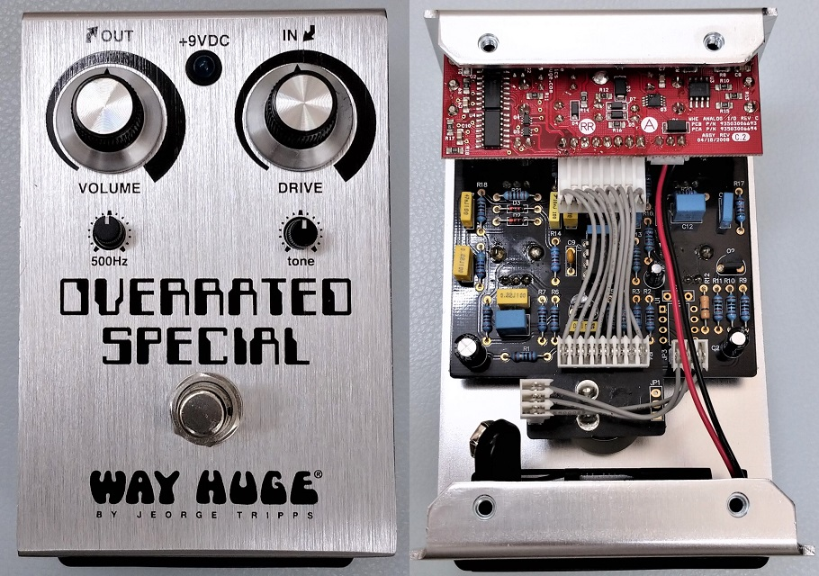
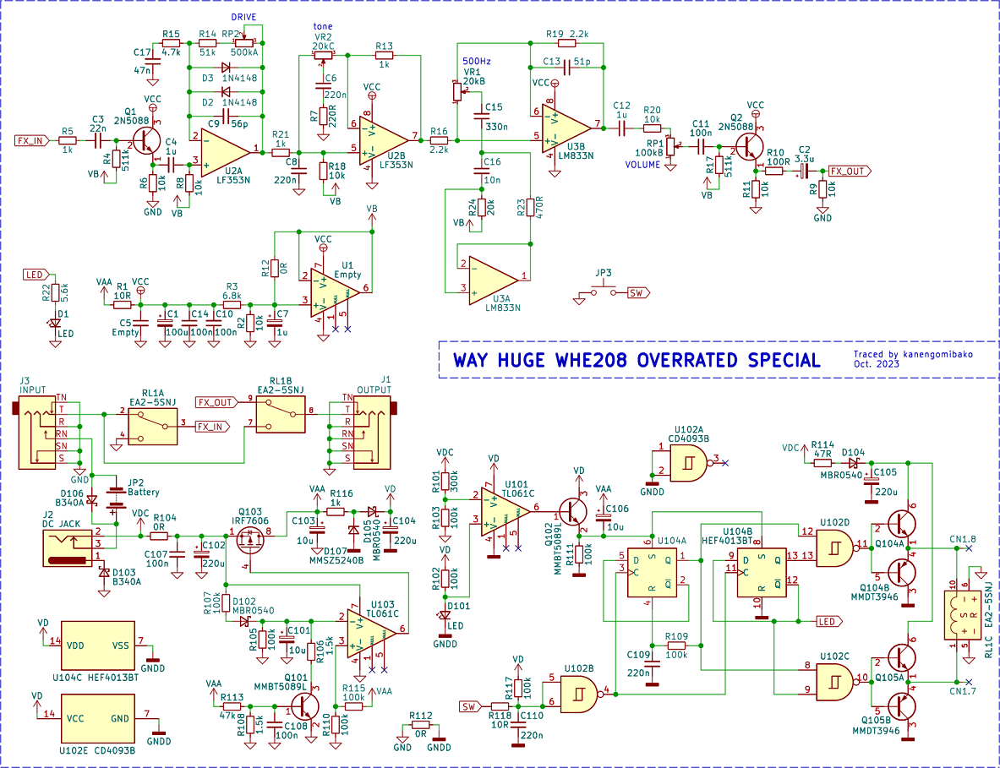
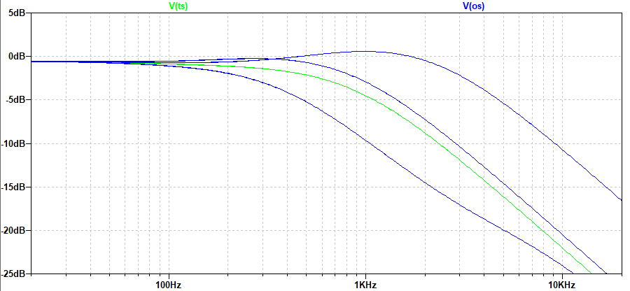
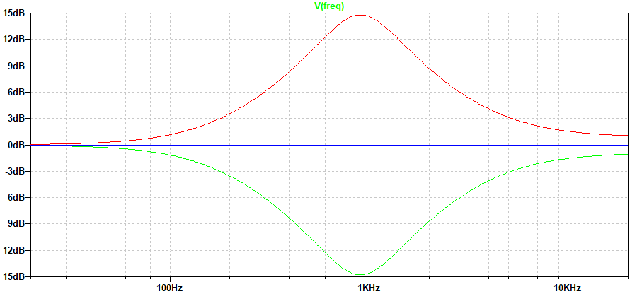
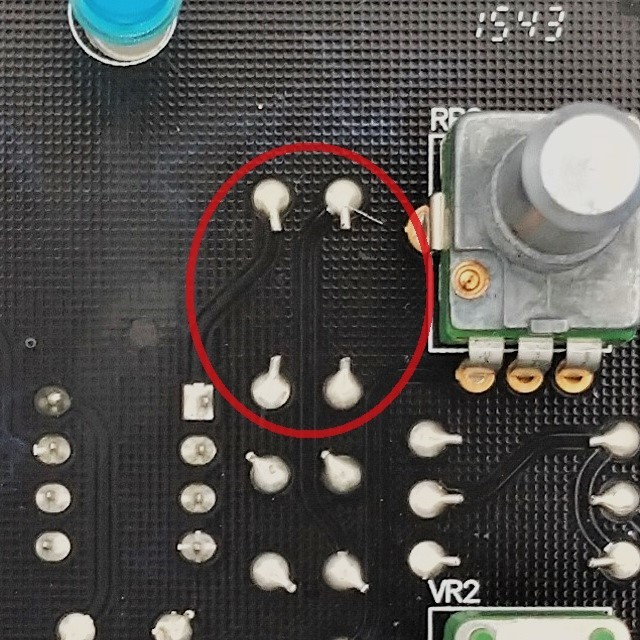

WAY HUGE WHE208 OVERRATED SPECIAL 解析
2023年12月02日 カテゴリー：修理・改造・解析

WAY HUGEは有名エフェクタービルダーJeorge Tripps氏のブランドで、何か一つ解析してみたいと思い、OVERRATED SPECIALを中古で入手しました。KiCadとLTspiceのデータはGitHubにあります。
▽回路図

基板が2枚あり、回路図の上半分が黒いメイン基板上の回路です。下半分が赤い基板上のリレーバイパスと電源関係の回路ですが、あまり動作を理解できていません。電源供給が断たれた時、バイパス状態になるように設計されているようです。
メインの回路は、大部分がチューブスクリーマーと同じとなっています。主な違いは、500Hzコントロール部追加、バイアス電圧が高め、バイアス電圧部のコンデンサ容量が小さいといった所です。また、トーンのポットがCカーブなので、操作感が違っています。

TONE最大・最小時は同じで50%時に高音域寄りになりますが、思ったよりバランスがよいコントロールに感じます。
500Hzコントロールは、実測・シミュレーションではなぜか900Hz付近の増減となっています（下図）。

周波数に関係するコンデンサはC15とC16、抵抗はR23とR24です。これらが前の所持者により交換されている可能性を考え、他の個体の内部写真を検索しました。コンデンサは同じ値なのを確認できましたが、抵抗については明瞭な画像がなく値がわかりませんでした。再度半田付けしたような痕跡はない（下写真）ので、やはり元々こういう設計なのだろうと思います。

同時期に発売されたGREEN RHINO MKIVに500Hzコントロールがあるので、これを発展させた結果周波数が変わったのかもしれません。後発のSmallsシリーズのWM28では「freq」という表記に変わっているので、こちらも周波数は500Hzではない可能性が高いと思います。